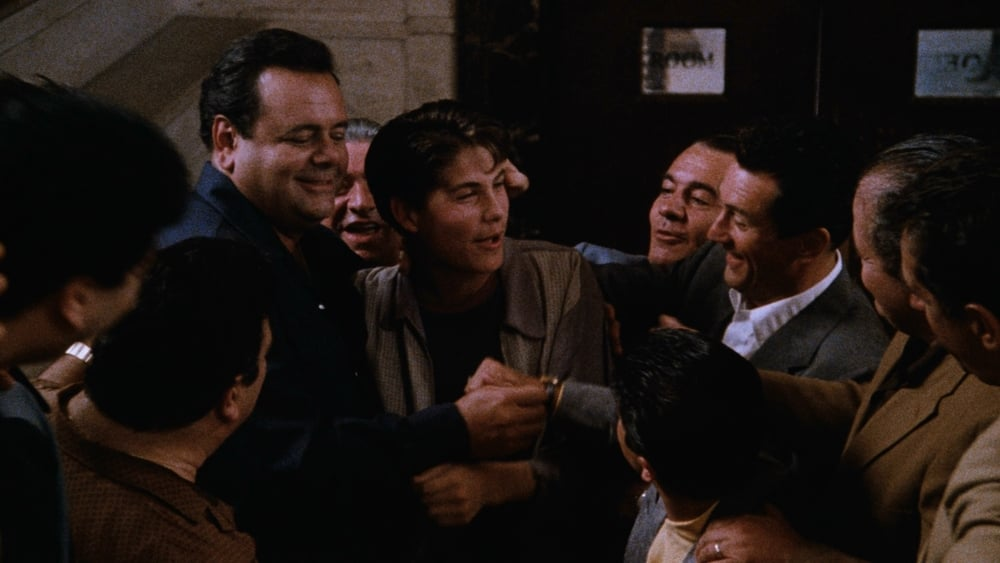

-
Drop The Needle: Top 10 'Goodfellas' Needle Drops
by Mitchel Green - October 19, 2023
|
mitchelgreen34@gmail.com

source: The Movie Database
This is the latest in an ongoing series about great needle drops throughout film history. What’s a needle drop? It’s the use of pop songs not created for the film it appears in — existing pieces of classical music (shoutout Bob Fosse’s use of Antonio Vivaldi’s “Concerto in G” in “All That Jazz”) or songs written specifically for the movie (shoutout Spike Lee’s use of Public Enemy’s “Fight the Power” in “Do The Right Thing”) might get their own special pieces. Movies have influenced my taste in music more than anything else, so I wanted to highlight and celebrate that influence here.
If I wanted to retool this entire series to be only about Martin Scorsese’s needle drops, I’d have enough content to publish until the end of time. I won’t do that — although maybe I will tackle a couple in depth at some point — but the fact that I could speaks not just to Scorsese’s musical taste and its influence on my own, but also how he can incorporate that music into his work in a way that blends so well with his filmmaking technique.
I was going to rank my top five needle drops from Scorsese’s entire career, but too much of the list was just from his 1990 masterpiece “Goodfellas,” so I shifted the list to just songs used in that film. But as I was compiling the list, five spots didn’t seem like enough to cover the famous sequences and my favorite, underappreciated needle drops, so I’ve ended up with my top 10 uses of music from “Goodfellas.”
10: “My Way” - Sid Vicious
Should end credits songs be eligible for the pantheon of movie needle drops? It’s too easy to have a great one. There’s not much visually to set your music to, so the song is all that carries the emotional weight of the sequence. All you have to do is pick a great track that fits the vibe of what you just watched, and you’ve nailed it. The music doesn’t have to play with or against what you see. And yet, when a filmmaker breaks out the perfect coda for their work — one that captures the attitude, the themes, and the energy of the movie in a perfect 3-4 minute pop song — it’s hard to think of many better uses of music in the history of film. It just speaks to the strength of the rest of the soundtrack that this is only the tenth-best needle drop in “Goodfellas.” But as Sid Vicious screams his way through the Frank Sinatra classic, the song is the perfect encapsulation of everything you just watched as you learn what happened to the characters in real life. Henry Hill did it his way, the angry and violent punk rock way, and like many of us living normal lives, we love punk rock because it reminds us of how rebellious we could be if we wanted to.
9. “Stardust” - Billy Ward & The Dominoes
This needle drop accompanies my favorite Thelma Schoonmaker cut in the entire film. As a young Henry comes out of court for the first time, Scorsese again uses a freeze frame to capture the jubilation he and his fellow mobsters feel after not ratting on his friends, Henry taking that moment in as a core memory. Suddenly, the bridge from “Stardust” kicks in, with Billy Ward’s powerful voice holding on “I” for several seconds before crashing down with “wonder” and the booming piano chords as we flash forward about a decade and are reintroduced to Ray Liotta and Joe Pesci as young Henry and Tommy. The song plays quietly for a couple more minutes, but that combination of the flash forward and the start of the bridge is what matters here. Like the song, the story being told is about to amp up, and you never know when it will come crashing back down.
8: “Life Is But A Dream” - The Harptones
The “Goodfellas” soundtrack is populated with several lovely 50s doo-wop songs, and none works as well in the context of the film as The Harptones’ “Life Is But A Dream.” For Karen, marrying Henry doesn’t feel real. Her wedding is attended by an enormous, extended crime family that she can hardly keep track of. She’s in a completely new world now, a dreamland of sorts. Of course, this will be one of the last real moments of joy experienced in her marriage. But she doesn’t know that yet. For now, as she dances with Henry at her wedding, all she’s thinking about is romance. Her heart is full, and the soundtrack reflects that.
7. “Rags to Riches” - Tony Bennett
Is this the greatest opening to a film ever? It would get my vote, at least. The final shots of the Billy Batts murder see Henry standing over the mobsters’ victim in an open trunk. As far back as he could remember he wanted to be a gangster, he thinks before he slams the trunk and the camera pushes in on him, closing on a freeze frame as the opening notes of Tony Bennett’s “Rags to Riches” blaring over the soundtrack. The lyrical content is obvious — we are about to see Henry go from rags to riches — but the big band instrumentation conveys the grandeur that is so alluring about the gangster lifestyle. The song continues past the minimalist Saul and Elaine Bass opening credits and essentially plays in Henry’s head as he looks over the mobsters at the cab stand, wishing desperately he could be one of them. For a film with this much pop music, the first needle drop needs to set the tone, and it does just that.
6. “Mannish Boy” - Muddy Waters
Throughout the entire sequence before Henry finally gets busted, Scorsese sets the events of the day to up-tempo, propulsive rock and roll, bouncing from song to song to try and make the audience feel like Henry, mind all over the place and unable to settle down. Oddly enough, it’s a line of cocaine that seemingly snaps Henry back to reality, or at least slows everything down for him and allows him to focus. Scorsese conveys this feeling with a rapid push-in on Henry’s face with a dolly zoom and Muddy Waters’s “Mannish Boy” overwhelms George Harrison’s “What Is Life” on the soundtrack, that iconic five-note blues riff drowning out all other sounds. The song lingers before Henry leaves, but playing that riff once is all the viewer needs. Shit is about to go down, but we think for a second he might just get away now that things are starting to calm down.
5. “Then He Kissed Me” - The Crystals
A needle drop talked about a lot more for the scene’s filmmaking than the song itself, The Crystals’ “Then He Kissed Me” is what helps provide depth to what might otherwise be seen as an unnecessarily flashy tracking shot that follows Henry and Karen through the back of the Copacabana. At this point, we’ve already been introduced to Karen’s perspective via her voiceover. We experience the film through both her and Henry’s points of view, so Scorsese uses the soundtrack and the shot to show us both perspectives simultaneously. The tracking shot is Henry showing off what he can do and how cool he is to Karen, while the song’s lyrics tell us Karen’s feelings about the situation. She’s smitten, completely defenseless to Henry’s charms. Once Henry does this for her, she’s never getting away.
4. “Jump Into The Fire” - Harry Nilsson
I already talked about the day Henry gets busted with “Mannish Boy,” but the key needle drop during the whole sequence is Herry Nilsson’s “Jump Into The Fire.” This is the song that kickstarts it all, immediately setting a tone of urgency with its quick, bouncing bass riff. But it’s a controlled urgency. Henry isn’t totally drugged out of his mind yet, and he hasn’t become overly paranoid. There’s a ton to do, yes, but he knows what it is, and he’s confident he can get it all done. Then things start falling apart. By the time Henry tries to give Jimmy the guns that don’t work with his silencers, the music begins to change, and Henry’s mind starts to bounce around just like the soundtrack — fittingly, this is right when Jimmy says “Stop with the drugs. They’re turning your mind into mush.” By the end of the sequence, the viewer’s mind is going to feel like much too from the overwhelming amount of information being thrown at them at great speed.
3. “Sunshine Of Your Love” - Cream
The back half of “Goodfellas” is all about the fall of these horrible men, and the harsh consequences that come with their abhorrent actions. Fittingly, the soundtrack reflects this by shifting from softer 50s pop standards to harsher 60s and 70s rock and roll music. Not only does this help us place when a scene is taking place in time, but it shifts the tone to be much darker than the more fun, rambunctious first half. As the camera pushes in on Jimmy in slow motion as he takes a drag from a cigarette while staring menacingly at Morrie, the opening riff to Cream’s “Sunshine Of Your Love” drones over the soundtrack. He’s plotting something, which we will soon find out is a mass hit on almost every member of his crew. But we’re still in Henry’s point of view. We’re just as concerned about him as Henry’s voiceover suggests he is. For now, all we can do is wait.
2. “Beyond The Sea” - Bobby Darin
I can’t chop garlic without this song playing in my head. I can’t even think about garlic without this song playing in my head. For wiseguys, prison is a vacation. A party. What better way to show that than having a group of prisoners sit down for a nice steak dinner set to a romantic pop standard? There’s a warmth in this scene that isn’t typically seen in prison movies. Scorsese takes what is typically depicted as a harsh, lonely place and turns it into a setting where community can flourish. That is, as long as you know the right people. As on the outside, money talks. You can get away with anything in prison if you have enough to pay your way to favorable treatment. It’s an idea Scorsese would return to later in “The Wolf of Wall Street” when Jordan Belfort’s time in a minimum security prison is portrayed more like a country club visit. Of course, when Henry is shown in prison not surrounded by his fellow gangsters, prison reverts to being the cold, unfeeling place it really is. He has to sell drugs to keep money coming in, which puts his life in danger with Paulie and his marriage with Karen starts to strain. But for brief moments, as “Beyond The Sea” plays on the soundtrack, Henry can see the beauty of life on the outside.
1. “Layla” - Derek & The Dominoes
This is not just the most masterful sequence in “Goodfellas,” but in Scorsese’s entire oeuvre. The montage of Jimmy’s crew found in increasingly gruesome and absurd places after being whacked is shocking and features impressive camerawork, but none of it works thematically without the needle drop. By cutting out the fast, guitar-driven beginning of “Layla,” and starting instead with the piano portion, Scorsese signals that this is the end of the exciting times, that we have reached our slow descent into tragedy. The beautiful, melodic piano works as a darkly comic counterpoint to the brutal violence we see the results of, and it functions as Jimmy’s bit of relief after carrying out the hits on all of the crew members from the Lufthansa heist. The use of a second Eric Clapton song, one from a post-Cream period of his career when he felt freer and had more control over his musical output, tracks Jimmy’s mental state after being freed of his loose ends. Things are lighter for him now, and his troubles are gone for what seems like an eternity, just as the piano section of the songs seems to go on forever. But the song always ends, and eventually, Jimmy's (and the rest of the family's) psychopathic violence catches up to them.